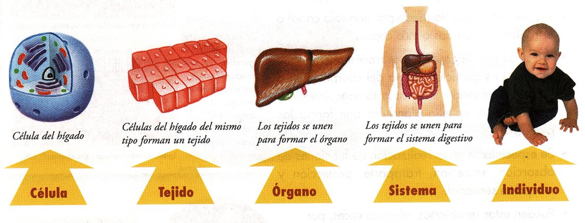
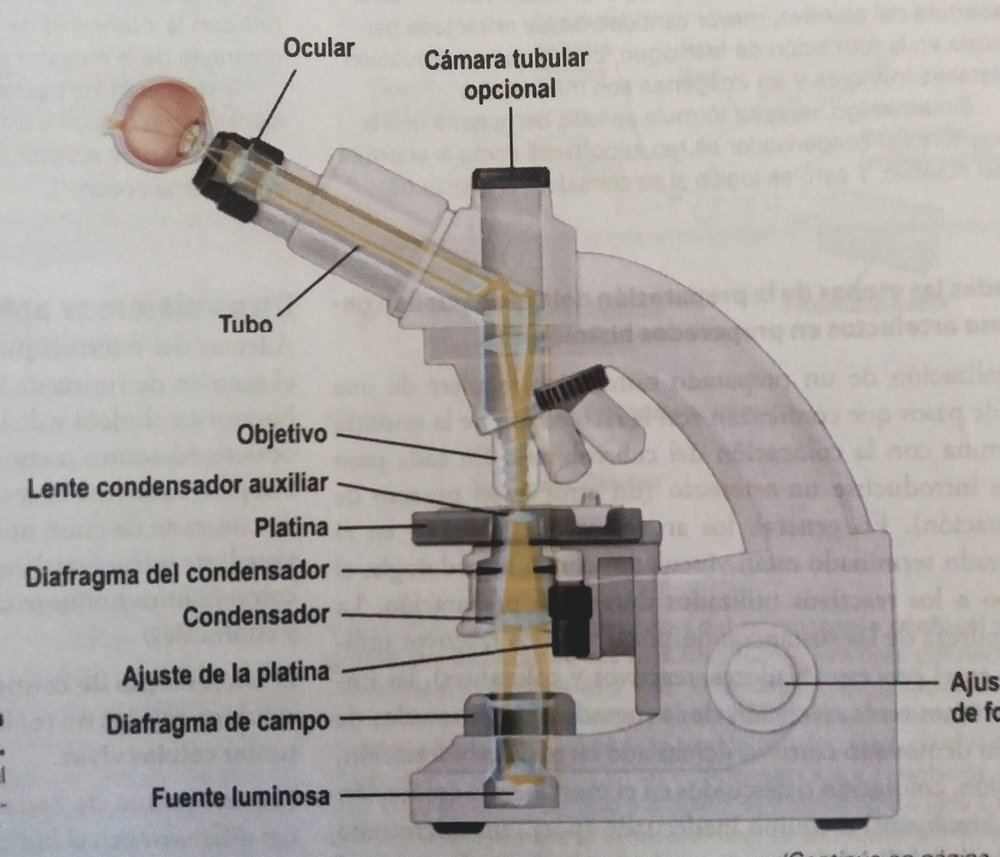

ClinicusMed · Dra. Daisy Rios · Dossiê Clinicus — Padrão de Excelência
La Histología (del griego histos = tejido; logia = ciencia) es la ciencia que estudia las estructuras microscópicas de los tejidos y órganos del cuerpo.
| Autor | Contribución |
|---|---|
| Bichat | Anatomía macroscópica — describió cerca de 20 tipos de tejidos |
| Mayer | Anatomía microscópica — clasificación en 4 tejidos fundamentales |
| Marcello Malpighi | Considerado el padre de la histología/anatomía microscópica, a partir de todo lo descubierto con el uso temprano del microscopio |
Toda la organización microscópica del cuerpo humano se construye a partir de solo 4 tipos fundamentales de tejido:
| Tejido | Función general |
|---|---|
| Epitelial | Revestimiento y glándulas |
| Conectivo (Conjuntivo) | Sostén, relleno y nutrición de otros tejidos |
| Muscular | Contracción y movimiento |
| Nervioso | Recepción y conducción de estímulos |
La célula es la menor unidad estructural y funcional de todo ser vivo. La ciencia que estudia la célula se llama Citología. Su forma varía mucho según su función y el medio donde se encuentra — algunas células ni siquiera presentan una forma constante.
| Propiedad | Definición |
|---|---|
| Absorción | Capacidad de captar sustancias del medio circundante |
| Secreción | Transformar las moléculas absorbidas en un producto celular |
| Excreción | Eliminar productos de desecho del metabolismo |
| Respiración | Obtención de energía a partir de nutrientes |
| Irritabilidad | Capacidad de reaccionar ante un estímulo (luz, acción mecánica o química) — más exacerbada en las células nerviosas |
| Conductividad | Capacidad de transmitir un impulso |
La complejidad del cuerpo humano se construye en niveles jerárquicos crecientes:

Célula (ej: célula del hígado) → Tejido (células del mismo tipo se agrupan) → Órgano (tejidos se unen, ej: hígado) → Sistema (órganos se unen, ej: sistema digestivo) → Individuo.
Para visualizar estructuras microscópicas se necesita un instrumento que aumente la capacidad de nuestros ojos. El microscopio óptico (o de campo claro) es el más utilizado, basado en lentes ópticas que usan luz (fotones).
| Concepto | Definición |
|---|---|
| Poder de Resolución | La distancia mínima que debe existir entre dos puntos del objeto para que se visualicen como estructuras separadas |
| Aumento | Cuánto más grande se ve la imagen en comparación con el tamaño real del objeto |
Tipos de microscopio (el óptico/campo claro es el más usado en la práctica): contraste de fases, campo oscuro, fluorescencia, ultravioleta, de barrido, de polarización, electrónico de transmisión (MET) y electrónico de barrido.
Compuesto por partes mecánicas y ópticas. Los componentes ópticos constan de 3 sistemas de lentes:
| Componente | Función |
|---|---|
| Condensador | Produce un haz de luz que ilumina el objeto estudiado |
| Objetivo | Aumenta el objeto y proyecta la imagen sobre el ocular |
| Ocular | Aumenta aún más la imagen y la proyecta sobre la retina del observador |

O sistema guarda, no seu navegador, quais cards você já sabe bem e quais precisam voltar mais cedo.
Escolhe uma alternativa, depois clica em "Ver comentário completo".